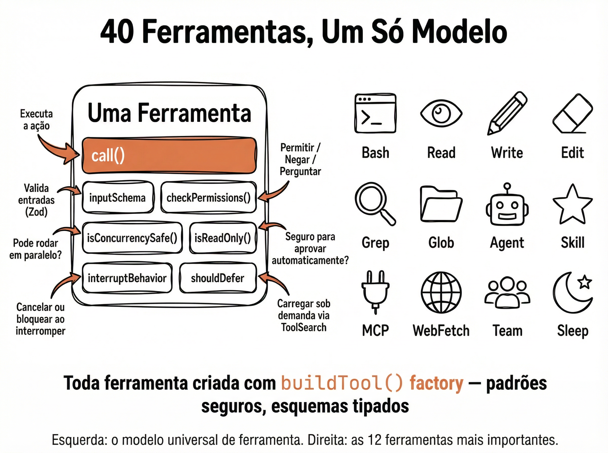

ê°Å¸ââ¹ O Padrê£o Universal ê¢â¬â ~30 mê©todos por ferramenta
O Claude Code tem mais de 40 ferramentas, e cada uma delas segue o mesmo modelo universal. Uma ferramenta ê© um objeto com cerca de 30 mê©todos que definem o que ela faz, como validar entradas, quem pode executê¡-la e o que acontece se vocêª interrompêª-la.

Um Padrê£o Para Todas
ê°Å¸âÅ As 12 Ferramentas Mais Usadas
ê¢Å¡â¢ê¯Â¸Â Anatomia de uma Ferramenta ê¢â¬â call(), inputSchema, checkPermissions
Vamos abrir uma ferramenta e ver suas entranhas. Cada mê©todo tem um propê³sito claro e bem definido.
Os Mê©todos Essenciais
call() ê¢â¬â Executa a aê§ê£o principal (ler arquivo, rodar comando, etc.)
inputSchema ê¢â¬â Define e valida as entradas usando Zod (biblioteca de validaê§ê£o TypeScript)
checkPermissions() ê¢â¬â Decide: permitir automaticamente, negar ou perguntar ao usuê¡rio
isConcurrencySafe() ê¢â¬â Esta ferramenta pode rodar em paralelo com outras?
isReadOnly() ê¢â¬â Se true, ê© seguro aprovar automaticamente
interruptBehavior ê¢â¬â O que acontece se vocêª pressionar Ctrl+C no meio da execuê§ê£o
shouldDefer ê¢â¬â Carrega sob demanda via ToolSearch para manter a lista enxuta
ê°Å¸â¡ Zod para Validaê§ê£o
Toda entrada ê© validada com Zod antes da execuê§ê£o. Se vocêª passar um parê¢metro invê¡lido, a ferramenta rejeita antes mesmo de tentar executar. Isso previne erros cascata e protege o sistema de inputs malformados.
ê°Å¸â Sistema de Permissêµes ê¢â¬â allow, deny, ask
Cada ferramenta tem um sistema de permissêµes de trêªs nêÂveis que equilibra autonomia com seguranê§a. Vocêª pode configurar para que aê§êµes seguras sejam automê¡ticas e aê§êµes perigosas peê§am confirmaê§ê£o.
Os Trêªs NêÂveis
ê°Å¸â¡ Configurando Permissêµes Automê¡ticas
O problema mais comum ê© o sistema pedir confirmaê§ê£o o tempo todo. A soluê§ê£o: configurar wildcards no settings.json:
Resultado: menos interrupê§ê£o e mais automaê§ê£o.
ê¢Å⦠Fazer
ê¢ÂÅ Evitar
ê°Å¸â⬠Concorrêªncia e Paralelismo ê¢â¬â isConcurrencySafe e execuê§ê£o paralela
O Claude Code pode executar mêºltiplas ferramentas simultaneamente ê¢â¬â mas sê³ quando ê© seguro. O mê©todo isConcurrencySafe() ê© o guardiê£o que decide o que pode rodar em paralelo.
Paralelo vs Exclusivo
ê°Å¸âÅ Impacto Real
ê°Å¸âºÂ¡ê¯Â¸Â BashTool ê¢â¬â A mais protegida: 23+ verificaê§êµes
A BashTool ê© a ferramenta mais poderosa e mais protegida do Claude Code. Ela executa comandos shell ê¢â¬â e por isso tem mais de 23 verificaê§êµes de seguranê§a que bloqueiam padrêµes perigosos.
23+ Verificaê§êµes de Seguranê§a
A BashTool bloqueia:
$() e crases ê¢â¬â previne injeê§ê£o
zmodload, sysopen, syswrite
cmd1 && cmd2 sê£o divididos e cada parte ê© verificada independentemente
ê¢Å¡Â ê¯Â¸Â Por Que Tanta Proteê§ê£o?
Execuê§ê£o de shell ê© o maior vetor de ataque em agentes de IA. Um comando malicioso pode: deletar arquivos, instalar malware, exfiltrar dados, comprometer credenciais. As 23+ verificaê§êµes sê£o a diferenê§a entre um agente êºtil e um vetor de ataque.
ê°Å¸â¡ Classificador de ML Opcional
Alê©m das verificaê§êµes baseadas em regras, existe um classificador de machine learning opcional que pode aprovar ou negar comandos automaticamente com base na compreensê£o semê¢ntica ê¢â¬â nê£o apenas em padrêµes de texto.
ê°Å¸âŽ ToolSearch e Deferimento ê¢â¬â Carregamento sob demanda
Com 40+ ferramentas, listar todas de uma vez sobrecarregaria o contexto do modelo. A soluê§ê£o? Carregamento sob demanda via ToolSearch ê¢â¬â ferramentas sê£o carregadas apenas quando necessê¡rias.
Lazy Loading de Ferramentas
shouldDefer marca ferramentas para carregamento diferido
ê°Å¸âÅ Eficiêªncia de Contexto
ê¢Å⦠Fazer
ê¢ÂÅ Evitar
ê°Å¸ââ¹ Resumo do Mê³dulo
Prê³xima Trilha:
Trilha 2 - Nêºcleo: Arquitetura Profunda do Claude Code